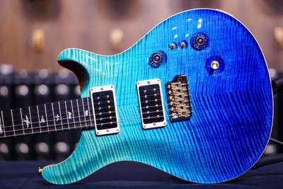
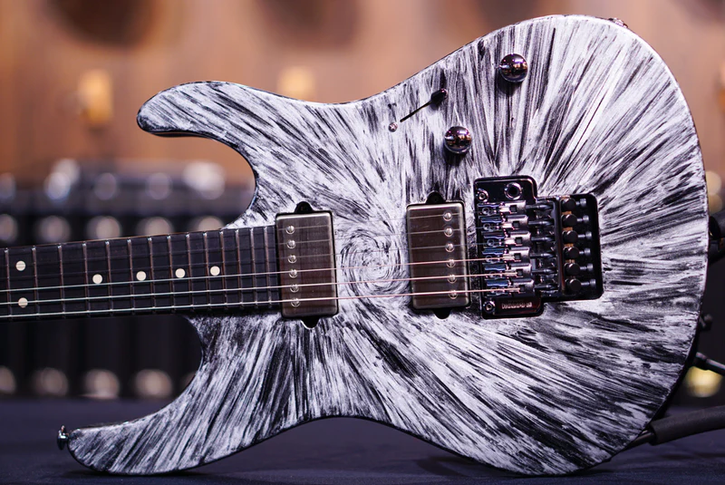
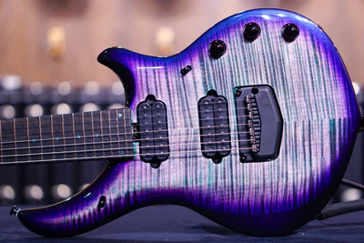

Paul Reed Smith Guitars, also known as PRS Guitars or simply PRS, is an American guitar and amplifier manufacturer located in Stevensville, Maryland. The company was founded in 1985 in Annapolis, Maryland by Paul Reed Smith.We are the PRS exclusive distributor for Indonesia. we currently have more than 500 PRS guitar in stock. the largest collection in the world.

Get Yours Now!
Suhr Guitars
Suhr Guitars is an American company that manufactures electric guitars and basses, guitar amplifiers, and effect units. The company is based in Lake Elsinore, California. At Suhr, we don’t merely produce some of the finest hand-crafted guitars and amplifiers – we produce dreams that inspire musical passion and artistic creativity. Our fervent dedication to the highest standards of quality possible, our fanatical attention to detail, our ears for tone, and our love for music, are all evident in everything we produce.

Get Yours Now!
Music Man
Originally founded in 1974, Music Man built its name leading an industry revolution, introducing active electronics on its production instruments.Shipping to more than 135 countries from the Central Coast of California, the brand continues to expand its reach worldwide based on the strict quality standards, innovative design and the finest craftsmanship it is known for.

Get Yours Now!